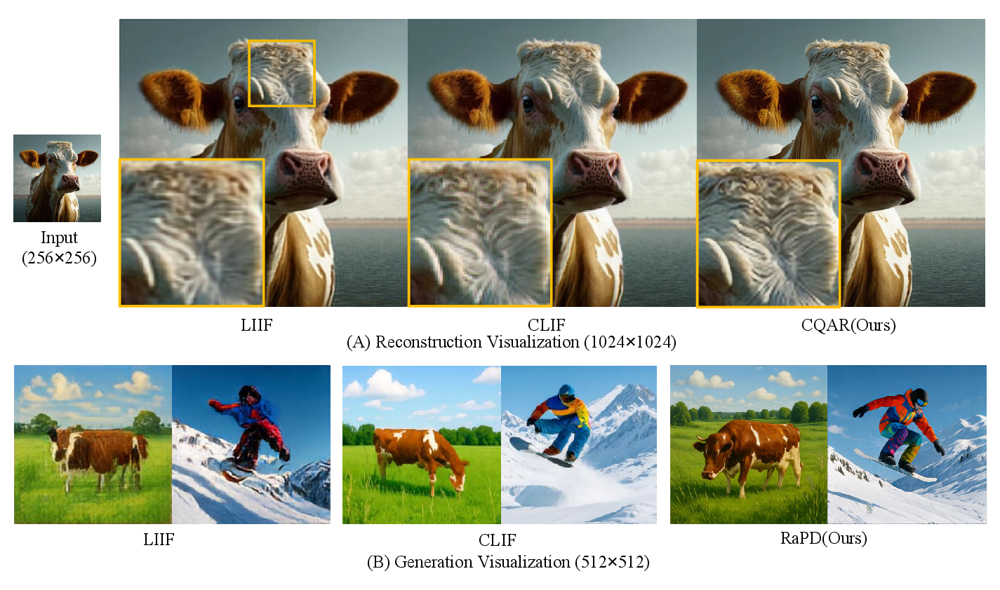
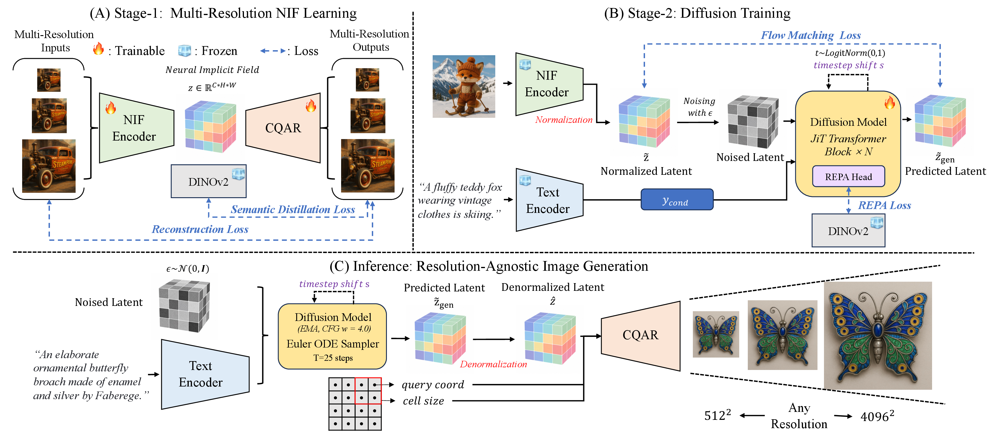
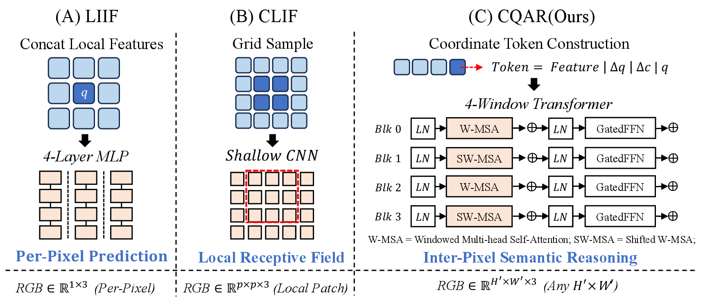
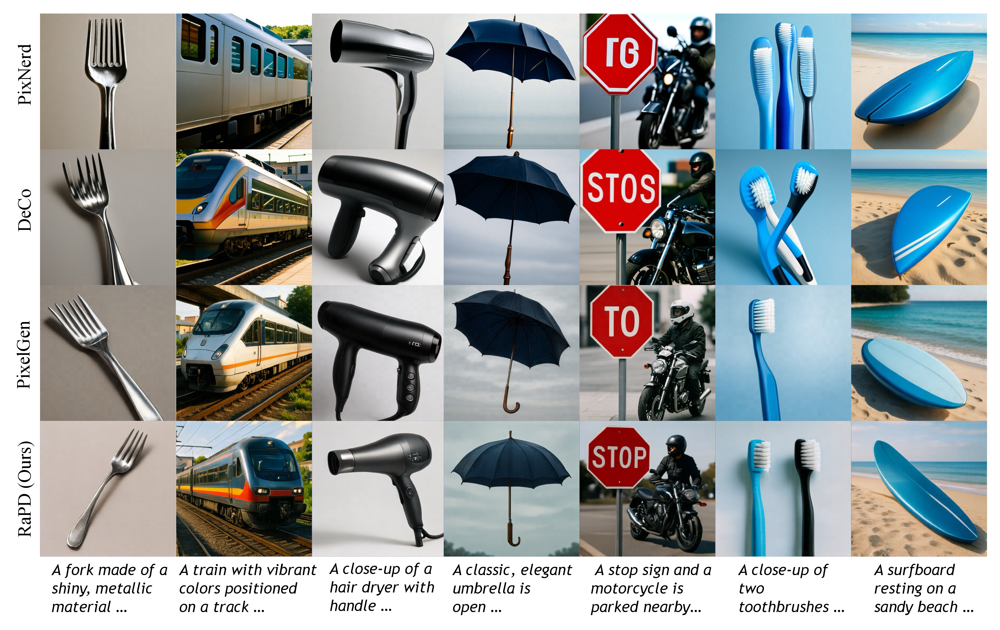

1Tongji University 2vivo Mobile Communication Co., Ltd. 3Nanjing University 4State Key Laboratory of Autonomous Intelligent Unmanned Systems; Frontiers Science Center for Intelligent Autonomous Systems, Ministry of Education
Left: the same model and denoised latent rendered at multiple output resolutions. Right: RaPD performs diffusion in a continuous Neural Image Field latent, then renders at the requested resolution. Open results ↗Open teaser ↗
Gallery
TL;DR
Generate once. Render at any resolution.
One continuous image representation. A fixed denoising budget. Flexible output sizes through coordinate-based rendering.
Abstract
Natural images are continuous, yet most generative models synthesize them on discrete grids, limiting resolution-flexible generation. Continuous neural fields enable resolution-free rendering, but prior methods introduce continuity only at the decoding stage as an interpolation module, leaving the generative latent space discretized and reconstruction-oriented. We propose RaPD (Resolution-agnostic Pixel Diffusion), which performs diffusion in a continuous Neural Image Field (NIF) latent space. RaPD bridges this reconstruction–generation gap with Semantic Representation Guidance for generation-aware latent learning and a Coordinate-Queried Attention Renderer for coordinate-conditioned, scale-aware rendering. A single denoised latent can be rendered at arbitrary resolutions by changing only the query coordinates, keeping diffusion cost fixed. Experiments demonstrate superior generation quality and resolution scalability.
0.86GenEval · 512 × 512
82.9DPG-Bench · 512 × 512
1.1BDenoiser parameters
2.13 s4096 × 4096 · B200
512² scores use progressive 256 → 512 training. Timing follows the efficiency experiment in the presentation.
From reconstruction to generation
A representation that reconstructs an image well is not automatically ready for generation. Reconstruction-trained LIIF and CLIF latents can preserve low-level texture while lacking the semantic structure needed by a diffusion model. Their local decoders also limit reasoning between output pixels.

The reconstruction–generation gap in existing Neural Image Field representations. Open figure ↗
Two stages. One reusable representation.
Shape the latent with semantic guidance, then generate in that learned space.

Stage 1: semantically guided multi-resolution NIF learning. Stage 2: text-conditioned flow matching. Inference: query one denoised latent at arbitrary resolutions. Open figure ↗
01 / Semantic guidance
Semantic Distillation
In Stage 1, pooled and projected NIF features learn from a frozen DINOv2 teacher. The distillation loss aligns features at each spatial position and preserves pairwise similarity relationships, while leaving the original latent layout unchanged.
ℒdistill = ℒmcos + ℒmdms
ℒmcos aligns local features using a cosine-similarity margin; ℒmdms aligns pairwise similarity matrices using a distance margin.
Latent-Density-Aware Timestep Shift
In Stage 2, timestep shifting adapts flow-matching training to the dense NIF latent. A larger shift factor emphasizes noisier states; RaPD uses s = 32.
t₀ = sigmoid(ξ), ξ ∼ 𝒩(0, 1) t = t₀ / [t₀ + (1 − t₀)s], s = 32
02 / Coordinate-based rendering
Render beyond a fixed grid
CQAR is a coordinate-conditioned, scale-aware renderer. It uses attention to support interaction between output tokens. Changing the query coordinate grid changes the output resolution without rerunning diffusion.

Decoder comparison: LIIF uses a per-pixel MLP; CLIF uses a shallow CNN; CQAR introduces coordinate-conditioned attention. Open figure ↗
Generation results
Text-to-image evaluation at 512 × 512. Higher scores are better.
GenEval
Method
Params
Single
Two
Counting
Colors
Position
Color attr.
Overall
LDM
1.4B
0.92
0.29
0.23
0.70
0.02
0.05
0.37
SD3
8B
0.98
0.84
0.66
0.74
0.40
0.43
0.68
FLUX.1-dev
12B
0.99
0.81
0.79
0.74
0.20
0.47
0.67
SANA
1.6B
0.99
0.79
0.63
0.88
0.18
0.47
0.66
PixelFlow-XL/4
0.9B
--
--
--
--
--
--
0.60
PixNerd-XXL/16
1.2B
0.97
0.86
0.44
0.83
0.71
0.53
0.73
DeCo-XXL/16
1.1B
1.00
0.92
0.72
0.91
0.80
0.79
0.86
PixelGen-XXL/16
1.1B
0.99
0.88
0.59
0.90
0.70
0.70
0.79
PixNerd-XXL/16 (‡)
1.2B
0.98
0.82
0.43
0.81
0.66
0.55
0.71
DeCo-XXL/16 (‡)
1.1B
0.99
0.92
0.65
0.91
0.71
0.77
0.83
PixelGen-XXL/16 (‡)
1.1B
0.99
0.88
0.58
0.91
0.70
0.67
0.79
RaPD
1.1B
0.99
0.93
0.72
0.93
0.77
0.74
0.85
RaPD (256→512)
1.1B
0.99
0.93
0.77
0.92
0.79
0.78
0.86
DPG-Bench
Method
Params
Global
Entity
Attribute
Relation
Other
Average
SD v2
0.9B
77.7
78.1
74.9
80.7
80.7
68.1
PixArt-α
0.6B
75.0
79.3
78.6
82.6
77.0
71.1
SANA
1.6B
90.3
91.2
89.0
88.9
92.0
85.5
PixelFlow-XL/4
0.9B
--
--
--
--
--
77.9
PixNerd-XXL/16
1.2B
80.5
87.9
87.2
91.3
72.8
80.9
DeCo-XXL/16
1.1B
--
--
--
--
--
81.4
PixNerd-XXL/16 (‡)
1.2B
87.2
87.1
88.9
87.1
89.8
81.5
PixelGen-XXL/16 (‡)
1.1B
81.4
88.8
86.7
88.9
88.9
80.4
DeCo-XXL/16 (‡)
1.1B
88.6
88.4
88.9
87.6
86.0
81.2
RaPD
1.1B
85.1
87.7
88.9
89.6
84.1
81.6
RaPD (256→512)
1.1B
81.3
89.9
89.7
88.9
81.2
82.9
‡ Officially released models evaluated with the same random seed and computing environment as RaPD. Progressive RaPD uses 256 → 512 training.

Qualitative comparison with PixelGen, DeCo, and PixNerd at 512 × 512. Open figure ↗
Beyond the training resolution
Method
Params
GenEval · 1024²
DPG · 1024²
GenEval · 2048²
DPG · 2048²
SANA
1.6B
0.66
84.8
0.70
83.1
SANA-v1.5
1.6B
0.82
84.5
0.80
83.8
FLUX.1-dev
12B
0.68
83.1
0.66
82.8
RaPD (256→1024)
1.1B
0.85
80.3
0.85
80.1
Progressive 256 → 1024 training. RaPD has the highest GenEval among these methods at both resolutions. Lower DPG scores indicate remaining room for improvement in detailed prompt adherence; 2048² is beyond the 1024² training supervision range.
Fixed diffusion cost. Flexible output size.
RaPD keeps 1,024 denoising tokens across all four output resolutions.
Method
512²
1024²
2048²
4096²
PixelGen
0.19 s
0.60 s
4.72 s
61.46 s
DeCo
0.21 s
0.67 s
5.03 s
62.72 s
RaPD
0.23 s
0.34 s
0.68 s
2.13 s
Per-image inference time on NVIDIA B200. PixelGen and DeCo use 1,024 / 4,096 / 16,384 / 65,536 tokens. Rendering still adds cost as output size grows.
Limitations & future work
Training data scale, the compact Qwen3-1.7B text encoder, and an inference stack that is not yet hardware-optimized remain limitations. Detailed prompt adherence at high resolution also has room to improve.
Future directions include larger training datasets and denoisers, editing and control, and hardware-aware inference with FlashAttention, FP8, and fused kernels.
Citation
@article{ge2026rapd,
title={RaPD: Resolution-Agnostic Pixel Diffusion via Semantics-Enriched Implicit Representations},
author={Ge, Yanhao and Guan, Shanyan and Wang, Weihao and Tai, Ying and You, Mingyu},
journal={arXiv preprint arXiv:2605.15908},
year={2026}
}